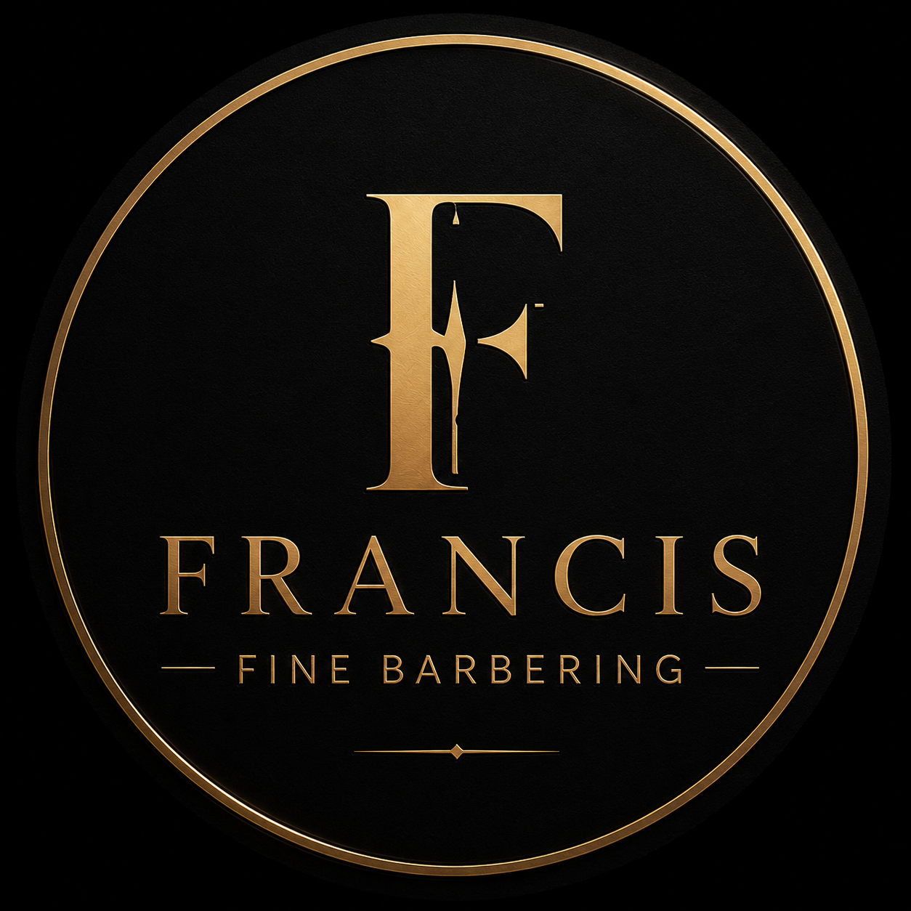

L'art du soin masculin, avec élégance.
Services professionnels offerts en salon, à domicile ou dans le confort de votre environnement.
Prendre rendez-vousSainte-Julie, Saint-Bruno, Boucherville, Beloeil, Mont-Saint-Hilaire et les environs.